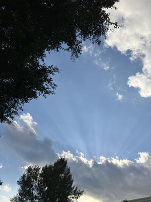
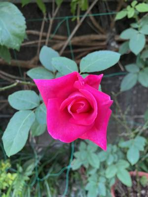
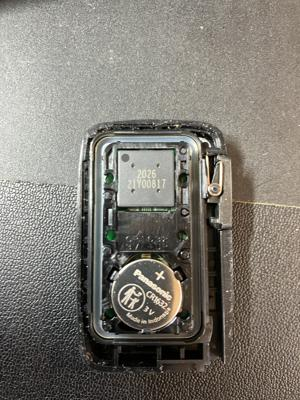

うるがいの話 ある日
最新: 断水するかも【うるがいの話 ある日】とは 一日だけのプログです
『うるがいの話』の最新一日だけのプログで、通信料が少なく経済的だ。カニの画像をクリックすると全ての日付が載る『うるがいの話』サイトを表示します
|
|
【うるがいの話】 うるがい(ｳﾙｶﾞｲ urugai)とは、『もずくがに』の名前でとても大きくなります。 |
|---|---|
|
|
【カミマヤーの話】 猫のことを方言でマヤーといいます。カミマヤー（kamimayaa）とは、神の猫のことです。 |
|
【たながぁの音楽】 たながぁ（ﾀﾅｶﾞｰ tanagaa）とは手長えびのことで、何種類かあり大きいのは車 エビぐらいになります。 |

|
【ぶながぁの話】 ぶながぁ(ﾌﾞﾅｶﾞｰ bunagaa)とは、赤い髪の毛、赤い身体、そして身長は１ｍ２０ｃｍ ぐらい、川の蟹を食べているの目撃された。場所は沖縄県国頭郡大宜味村のと ある村僕の隣近所に住んでいる爺さんから、聞いた話です。 |
|
|
【ギーマの話】 ギーマ(giima)とは、山原の里山に咲くスズランに似た、 花を付けます。実は食べられます、 気が付くと口の周りが紫になっています。 |
2025年11月24日 (月）断水するかも
16:46

企業局によると、24日未明、大宜味村塩屋に埋設されているダム
から浄水場へ水を送水する導水管が破裂した。導水管は1967年
に整備され、管が老朽化していたという。
沖縄本島全域で断水へ 11市町村全域と6市村一部 漏水発生、
復旧は早くても25日以降
え！、お昼の全国レベルのニュースにも放送されていた。さてう
ちは、影響するのだろうか調べた。残念影響する、一応お風呂の
バスに水を貯めた。貯水タンクないので。庭の薔薇のつぼみ

ヨメと買い物に出かけた、帰り先に駐車場についたヨメが、電子
キーでドアを開けようするが、無反応。オー、電池が切れた。切
れたのは、初めての経験である。すぐさま、電池交換をする。
